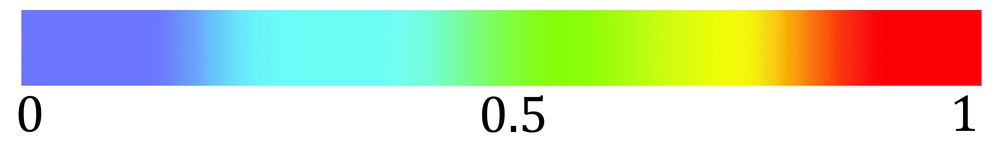
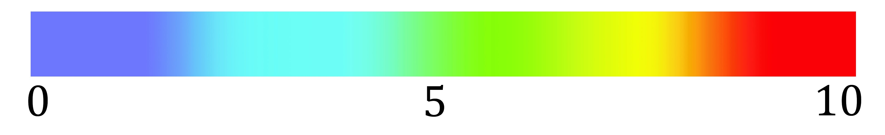

<!-- Display heatmap of the Machine Learning algorithm's output-->

<div class="map-container">
    <div class="map-frame">
      <div id="prediction"></div>
    </div>
</div>
<mat-card style="width: 350px;">
  <h1 style="text-align: center;" >Full Day Prediction Heatmap</h1>

  <mat-checkbox
  [disabled]="disablePrediction"
  (change)="showFullPrediction($event)"
  [checked]="false"
  aria-label="First checkbox">
    Behaviour Heatmap
  </mat-checkbox>

  <mat-slider style="margin-top: 20px" #daySlider
    thumbLabel
    [displayWith]="formatLabel"
    [disabled]="disableSlider"
    (change)="getPrediction(daySlider.value)"
    tickInterval="2"
    min="5"
    max="23">
  </mat-slider>
  <p style="text-align: center; margin-bottom: 40px;">Hour selector slider</p>
  <div style="text-align: center">
    <button (click)="generatePrediction()" mat-raised-button color="accent">Generate Prediction</button>
  </div>

</mat-card>




